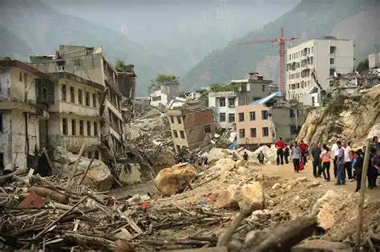
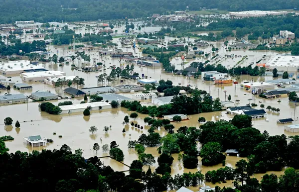
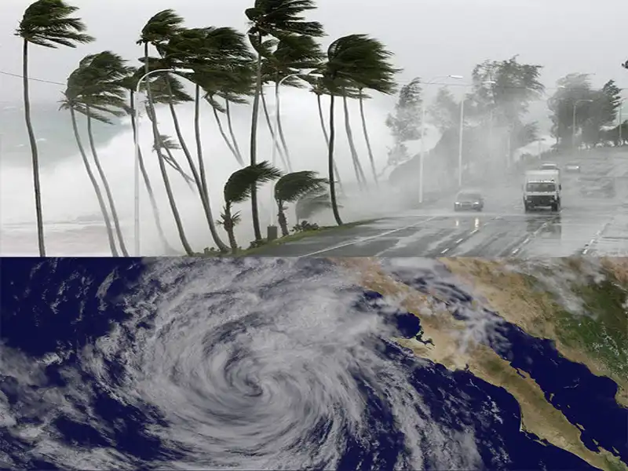

La mejor manera es tener un plan de emergencia que incluya a todos los miembros del hogar.
Descargar PDF
Survival72: preparación para emergencias y desastres naturales
Destacado
¿Qué es un Kit de Emergencia de 72 Horas?
Una mochila de emergencia de 72 horas es un conjunto portátil de suministros esenciales
preparado para tomarlo rápidamente si necesitas evacuar o afrontar una interrupción de
servicios básicos.
Debe adaptarse a las necesidades de cada persona y tener un peso que pueda transportarse
de forma segura.
Una mochila de emergencia no es lo mismo que una reserva doméstica. La reserva del hogar
puede incluir cantidades mayores de agua, alimentos y otros suministros para permanecer
en casa cuando sea seguro hacerlo.
Importancia de estar preparados
Haz clic aquí para ver la lista del kit de emergencia.
Ver lista del kit
Sigue los pasos en el PDF descargable para crear un plan de evacuación efectivo.
Descargar PDF
Mantén la calma - Evalúa la situación - Pide ayuda - Proporciona primeros auxilios básicos - Sigue las instrucciones oficiales - Prepárate para evacuar.
Después de un desastre, puedes encontrar refugios y asistencia en tu área contactando a los servicios de emergencia locales. A menudo establecen refugios temporales y brindan servicios esenciales.
Terremoto

Los terremotos son movimientos súbitos del terreno producidos por la liberación de
energía acumulada en fallas geológicas. Costa Rica se encuentra en una región de
importante actividad sísmica debido a la interacción de placas tectónicas.
Los terremotos pueden causar daños estructurales y, dependiendo de las condiciones,
provocar deslizamientos o tsunamis.
Acción clave: durante un sismo, agáchate, cúbrete y sujétate,
protegiendo especialmente la cabeza y el cuello.
Inundaciones

Las inundaciones ocurren cuando el agua cubre áreas que normalmente están secas.
Pueden producirse por lluvias intensas, desbordamientos de ríos y otras condiciones
que superan la capacidad de drenaje de una zona. Pueden afectar viviendas,
carreteras, servicios básicos y la calidad del agua.
Acción clave: nunca camines ni conduzcas a través de una zona
inundada. Si las autoridades indican una evacuación, sigue sus instrucciones y
desplázate hacia un lugar seguro.
Huracanes y ciclones tropicales

Los ciclones tropicales pueden producir fuertes vientos, lluvias intensas,
inundaciones y deslizamientos. En Costa Rica pueden generar condiciones peligrosas
incluso cuando el centro del ciclón no atraviesa directamente el país, especialmente
debido a las lluvias asociadas.
Acción clave: sigue los avisos oficiales del Instituto Meteorológico
Nacional (IMN) y de la Comisión Nacional de Emergencias (CNE), y respeta cualquier
indicación de evacuación.
Deslizamientos

Los deslizamientos ocurren cuando suelo, rocas o escombros se desplazan pendiente
abajo. Pueden ser provocados por lluvias intensas, saturación del terreno, sismos y
otras condiciones que reducen la estabilidad de una ladera. Pueden afectar viviendas,
carreteras y servicios básicos.
Acción clave: si ocurre un deslizamiento, aléjate rápidamente de su
trayectoria y dirígete hacia una zona segura fuera del recorrido del material.